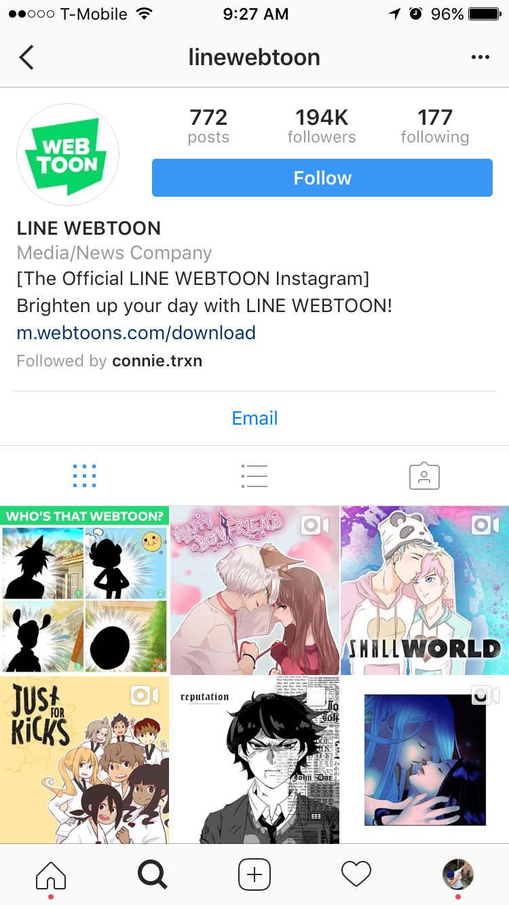

Social Media
As technology develops over the century, many forms of social media have emerged.
Some of our favorites are Facebook, Instagram, and Facebook. It is really easy
stalk people on social media, especially on Facebook because Facebook shows almost all their
information even if you did not add them hehe. Facebook also has messenger so you can
text people without knowing their phone number! WOW! Amazing, right? But that's not all!
Instagram also contains direct message so you can easily communicate with friends! I personally
enjoy using Snapchat the most because it allows me to show my friends almost everything!
huehuehuehue(clean thoughts..pure thoughts..innocent thoughts...). Social media also enables you
to know what is trending on the internet.
Facebook

Instagram

Snapchat